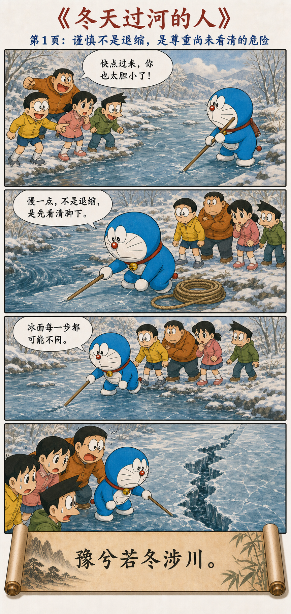
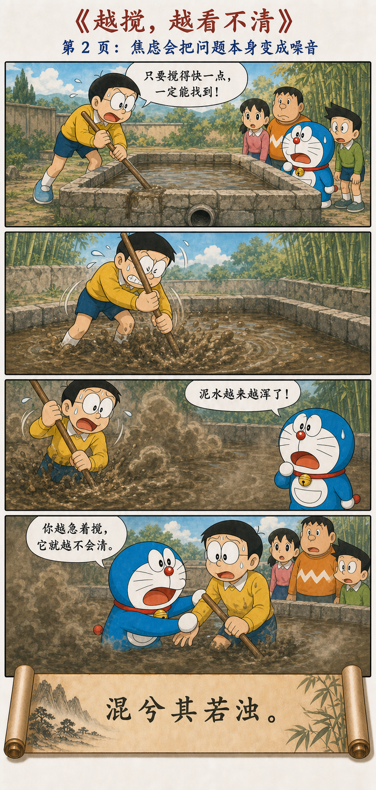
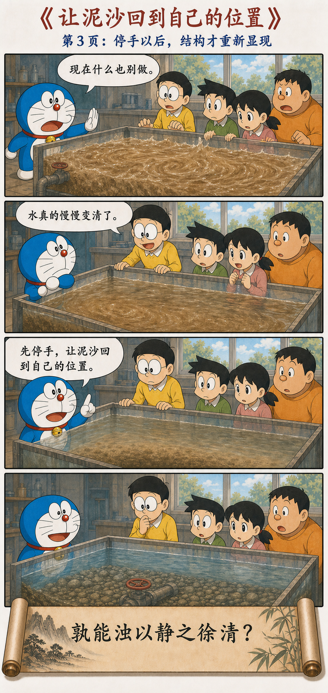
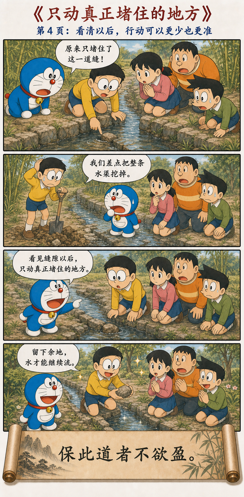

微妙玄通，深不可识
古之善为士者，微妙玄通，深不可识。夫唯不可识，故强为之容：豫兮若冬涉川，犹兮若畏四邻，俨兮其若客，涣兮若冰之将释，敦兮其若朴，旷兮其若谷，混兮其若浊。孰能浊以静之徐清？孰能安以动之徐生？保此道者不欲盈。夫唯不盈，故能蔽而新成。
真正深的人，不急着显示自己已经看懂
古代善于行道的人，精微、深通，不容易被一眼看透。只能勉强形容：谨慎得像冬天涉过河流，警觉得像留意四周，庄重得像在别人家作客；又松动得像冰将融化，质朴得像未经雕琢的木头，开阔得像山谷，混沌得像一池浊水。
谁能让浑水在安静中慢慢澄清？谁能让停滞的状态在活动中慢慢生发？守住这种方式的人不追求盈满。正因为不把自己塞满、做满，旧的东西才能在保留余地中完成新的转化。
从冬天涉川，到只动真正堵住的地方




“若冬涉川”不是胆小，是对未知保持敬意
结冰的河面看起来平整，每一步的厚度却可能不同。贸然冲过去，常被误称为果断；先用木棍测试、准备绳索和观察水流，反而容易被嘲笑为犹豫。
老子赞美的谨慎，不是永远不行动，而是在信息不足时不假装确定。风险越不可见，越要把每一步当成一次新的观察，而不是用第一步的安全替后面所有步骤担保。
有些问题，是被解决问题的动作搅浑的
阀门本来就在水底。大雄越想马上找到它，越用力搅动泥水；他的行动没有增加信息，反而遮住了信息。这种情况在现实中很常见：项目一乱就增加会议，关系一紧张就反复追问，市场一下跌就频繁交易。
“浊以静之徐清”不是说所有问题都会自行消失，而是先区分两件事：哪些混乱来自事情本身，哪些混乱是自己的焦虑持续制造的。停止第二种扰动，才可能看清第一种问题。
停手不是答案，停手是让答案重新变得可见。
静与动不是对立，而是两个正确的时机
先停止制造噪音，让沉淀发生。
辨认真正堵塞的位置，而非攻击整个系统。
只移走那块石头，让水重新流动。
静不是最高原则，合时才是。浑浊时需要安静，停滞时则要在适当动作中“徐生”。如果什么状态都用同一种办法处理，静也会变成僵硬，动也会变成扰乱。
不把事情做满，才有调整和新生的空间
大雄差点挖掉整条水渠，因为“彻底重做”看起来比搬开一块石头更有行动感。可是做得多，不等于解决得多。系统被填满、流程被写死、资源被占尽，新的信息出现时便没有调整余地。
“不欲盈”不是降低标准，而是不让方案膨胀到超过问题。保留反馈、试错和他人参与的空间，旧结构才可能逐渐转成新的秩序。
等待澄清，不等于拖延决定
如果冰面已经断裂，就要立刻撤离；如果有人正在受到伤害，就要及时制止。第十五章反对的不是必要行动，而是把焦虑误当成行动，把动作数量误当成问题进展。
判断是否该停，可以问：我现在的动作是否产生新信息？是否减少风险？是否直接触及阻塞？如果三个答案都是否定的，也许此刻最有用的动作就是减少动作。
先清，再准；留有余地，才能更新
第十五章把成熟画成一种不夸张的能力：面对未知时谨慎，面对混乱时不继续搅动，面对清晰的问题时精准行动，面对完成的方案时仍不追求盈满。
慢一点，不是退缩；看清以后，每一步都更接近真正的问题。